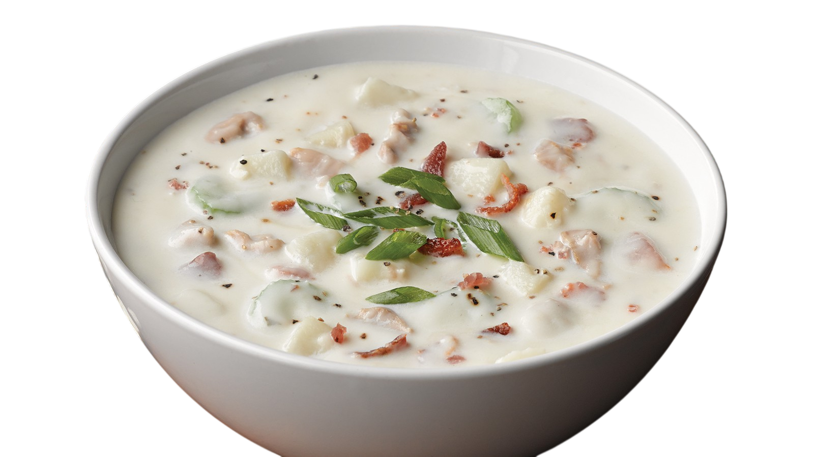
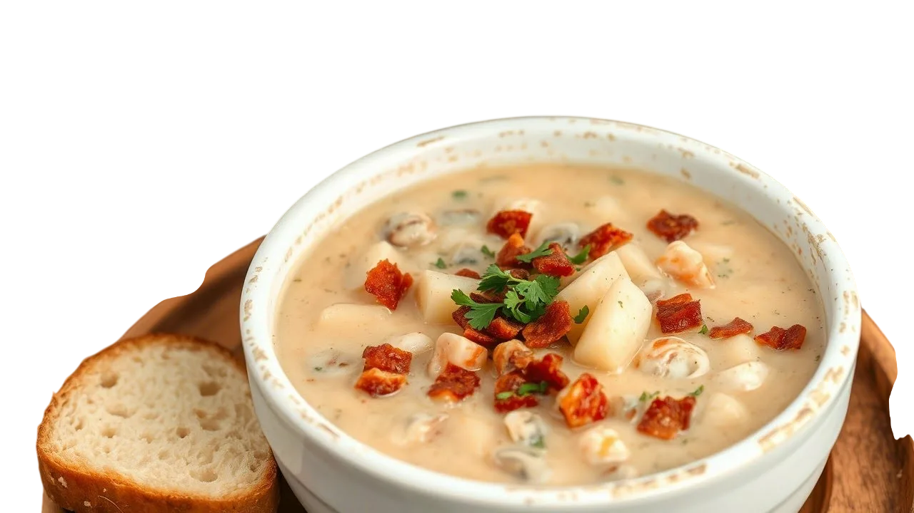
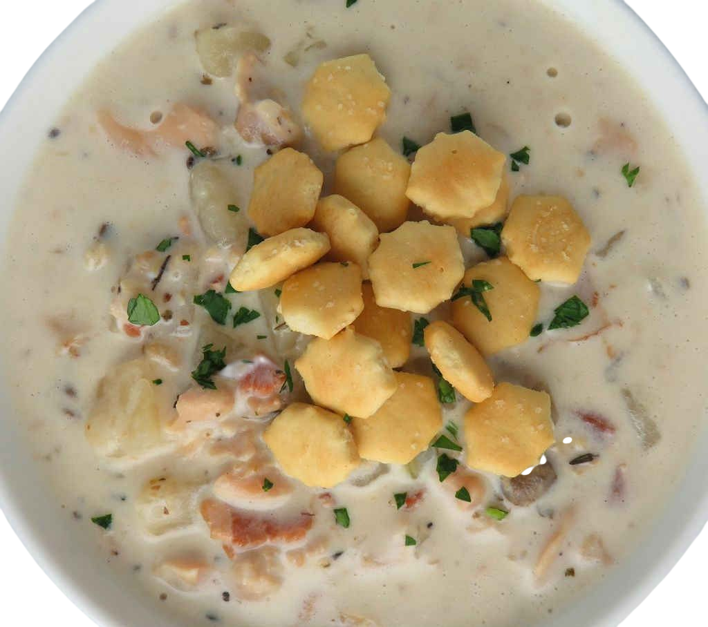
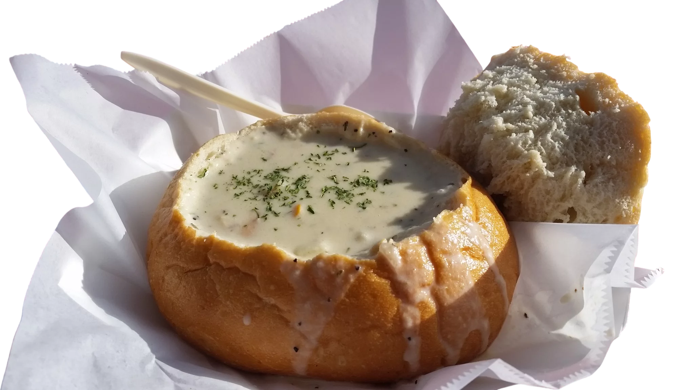

Состав

Основа
В зависимости от предпочтений это может быть
Молочная база

Смесь жирных сливок и цельного молока. Это дает супу его знаменитую бархатистую текстуру и нежный белый цвет.
Морской бульон

Сок из раковин моллюсков (clam juice). Самый важный компонент, который отвечает за глубокий океанический вкус.
Начинка
Моллюски (Clams)
Главный герой. Обычно используют твердые сорта. Секрет в том, чтобы добавлять их в самом конце — тогда они остаются нежными, а не «резиновыми»
Картофель
КартофельРежется мелкими кубиками. Он не только делает суп сытным, но и отдает свой крахмал для дополнительной густоты.
Копчености
Бекон или соленая свинина. Их обжаривают первыми, чтобы вытопить жир для пассеровки овощей и добавить супу легкий аромат дымка.
Овощная база
Репчатый лук и стебель сельдерея. Они создают фундамент вкуса, становясь мягкими и почти незаметными в общей массе.
Специи
Без них это просто картофельный суп с морепродуктами
Тимьян
Классическая трава для чаудера, идеально сочетающаяся со сливками.
Лавровый лист
Добавляется при варке картофеля для тонкого пряного фона.
Черный перец
Лучше свежемолотый, для легкой остроты в послевкусии.
Вустерширский соус
Иногда добавляют пару капель для усиления «мясного» и соленого вкуса (умами).
Подача
Ойстер-крекеры
Маленькие соленые печенья, которые насыпают прямо в тарелку для хруста.

Хлебная чаша
Часто суп подают в круглой буханке с вырезанным мякишем — так хлеб пропитывается сливочным бульоном.

Зелень
Щепотка свежего шнитт-лука или петрушки сверху для свежести.